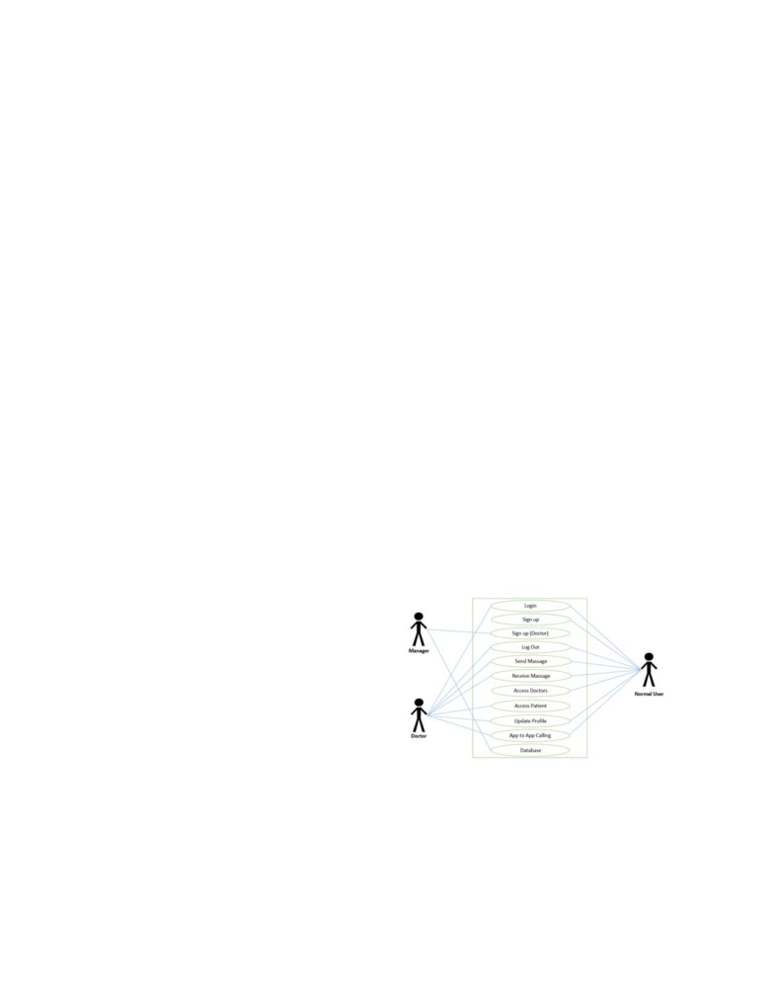
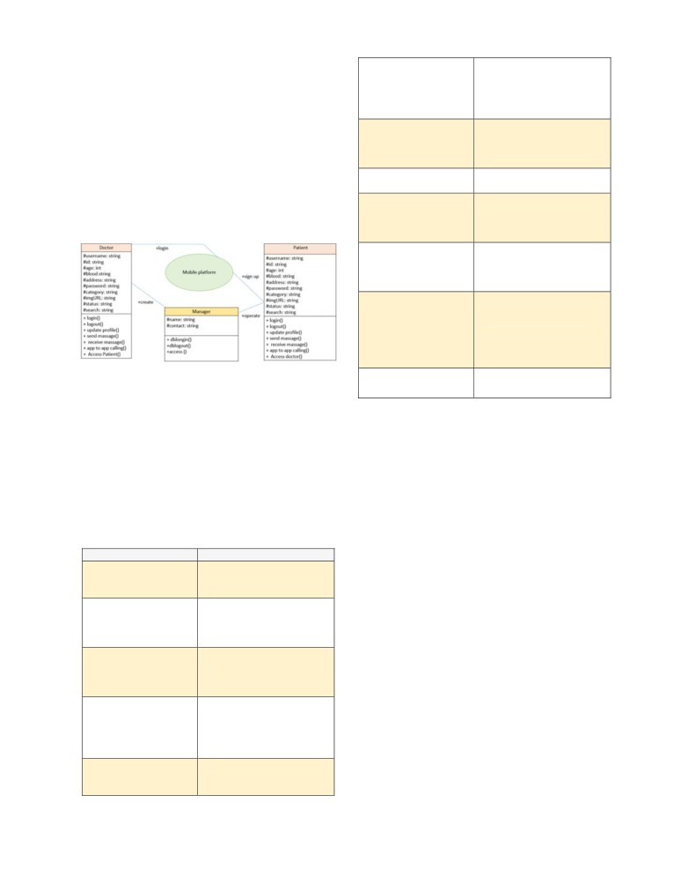
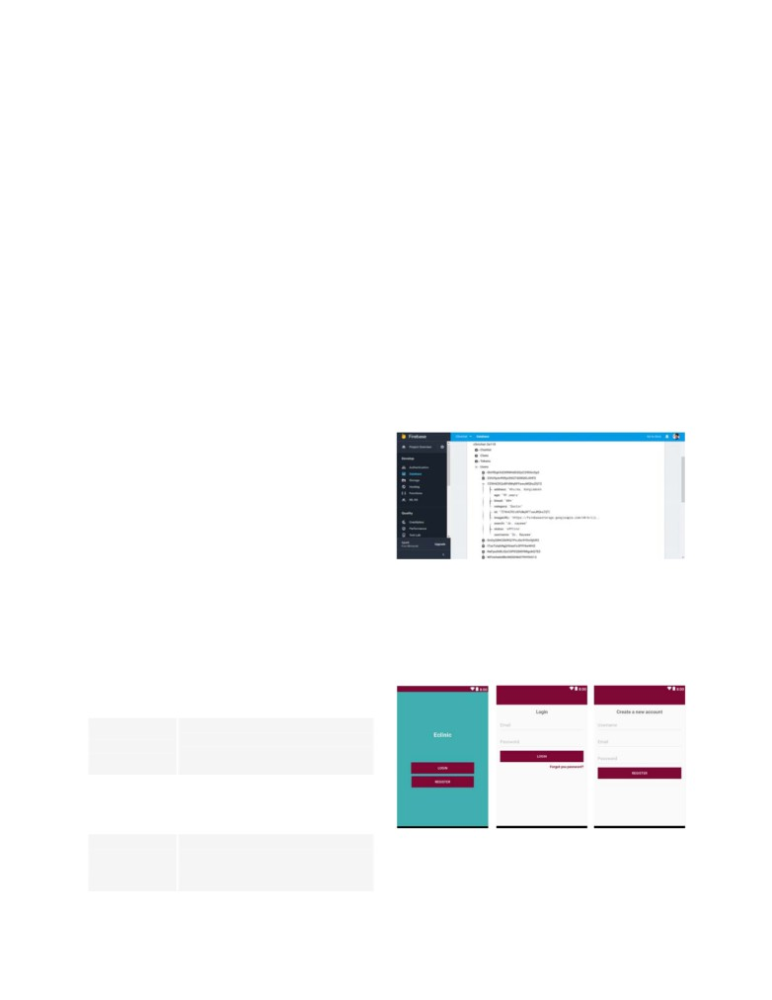
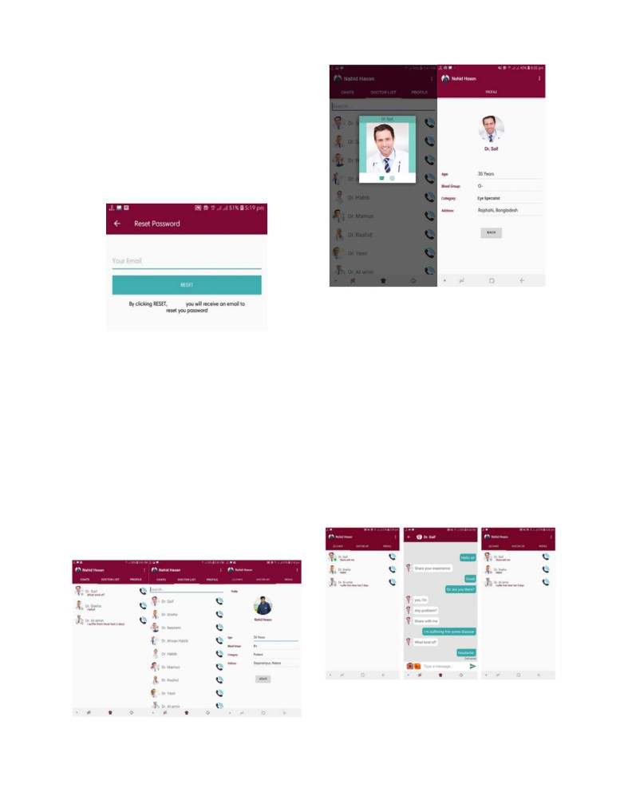
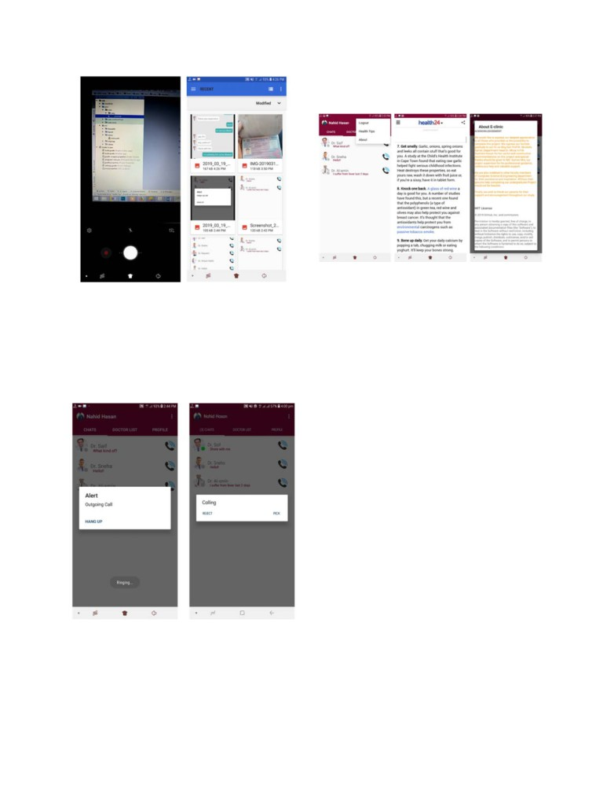
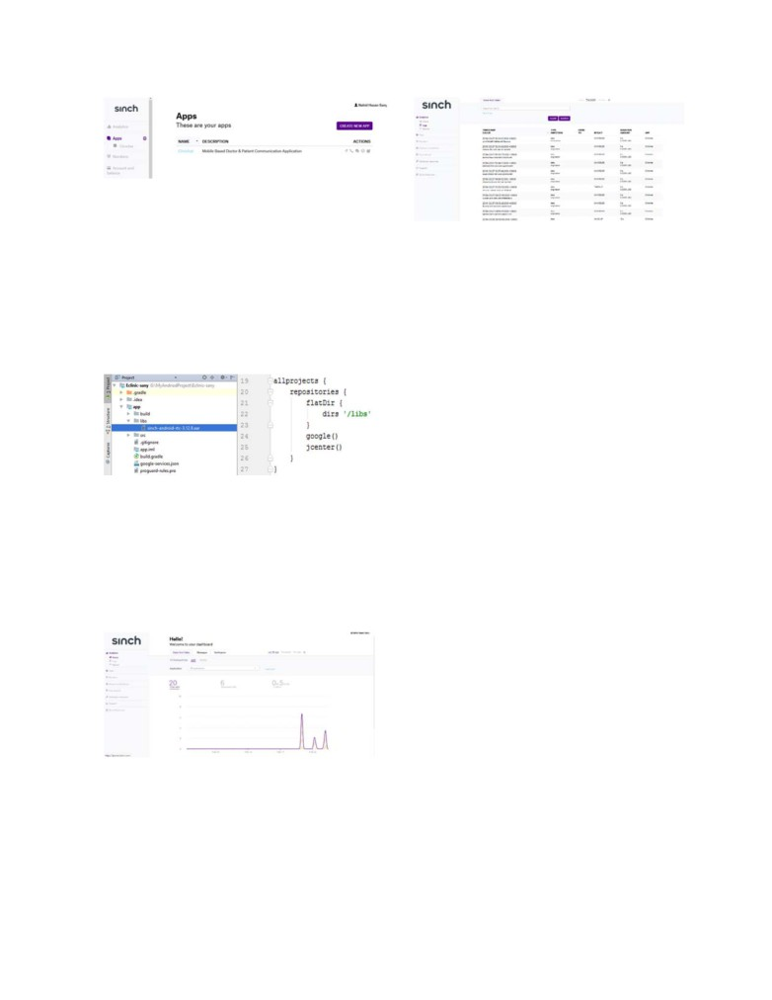

Mobile Based Doctor-Patient Consultation Application [E-Clinic]
Nahid Hasan Sany1, Khalid Bin Rohani2, Md. Sumon Mia3
1Id: 151329, 2Id: 151339
1,2Bsc in Computer Science & Engineering, BAUET
3Lecturer, Project Supervisor, Department of CSE, BAUET
1nahidhasansany@gmail.com, 2noyon.bauet@gmail.com, 3sumon.ruetbd@gmail.com
telemedicine and remote healthcare brought about significant
Abstract— Today there are lots of Chat applications
changes in developing nations [4]. Usages of short message
available in market and this project is useful for
service (SMS) text when it comes to management of behavior
communication and sharing of data between doctor and
change [5]. in sexual health education [6], and to improve
patient through internet.This project presents an application
that is developed based on the Android operating system,
patients adherence to antiretroviral treatment
[7].
using Android Studio, Firebase and Sinch. The project is
Comparison of the use of mobile phone records against
tested on an Android Emulator which is a tool that allows
traditional paper-based records in controlled drug trials is also
developers to easily test an application without having to
done in one study [8].
install the application on a real device.
Some patient-centered applications are also developed and
these are capable of doing multiple functions. The
By using this application no appointment is needed to
consult with doctors. No waiting time, instant realtime chat
applications are managing communication, chronical
virtually with doctors. In this report, the main goal is to
diseases and even self-diagnosis [9]. In the Android platform
develop a mobile health application that provides common
alone, numbers of Android apps are available with verities of
platform prospective patients and specialist doctors give free
functionalities, including self-monitoring blood glucose
consultation and health tips on health related conditions. It
recording, medication or insulin logs, and prandial insulin
reduces the extra paperwork, delay in timing and cost.
dose calculators [10].
Keywords— Mobile, Internet, Online application,
Mobile applications are also available when it comes to
Android, Firebase, Sinch, Hospital service, Sharing of data,
Doctor-patient communication.
mental health and psychological aspects of human. There is
an application that randomly prompts the patient to self-
I.
INTRODUCTION
report psychotic symptoms multiple times throughout the day
The development of Mobile health applications can lower the
and helps psychiatric patients to improve his/her overall
costs of health care delivery and improve the quality of
condition [11, 3]. Another app is made for the patients who
healthcare as well as shift behavior to strengthen prevention
suffer from sickle cell disease to make a dairy so that they can
and treatment of reported cases at the, all of which can
improve health outcomes over the long term. One of the main
keep track of their pain and other syndromes [12, 5]. There is
goals of using mobile technology in the health sector is to
also an app developed for monitoring the patients affected
improve the quality of and access to health care. Here we
with COPD (chronic obstructive pulmonary disease) [13, 5]
present a doctor-patient communication system based on
Android. Using this application doctor and patient can
b) Survey Of Similar Systems
communicate with each other and doctor-patient can share
1) Teladoc Teladoc connects you with a board-certified
data between them. The whole data is stored on firebase
doctor 24/7/365 through the convenience of phone or video
server. Doctor registration is done directly on firebase server
consults. Within minutes, a doctor will contact you ready to
by administration and patient can register remotely using the
listen and resolve your issue. If medically necessary a
application. First based on specialization of doctor, patient
prescription will be sent to your pharmacy of choice. It’s
can send message and call through internet to particular
doctor from list of doctor. If doctor accept patient calling
healthcare when and wherever you want it.Talk to a doctor -
request then they can communicate with each other.
Within minutes, a state-licensed doctor reviews your medical
history and contacts you via phone or video. Teladoc consults
II.
CONCEPTUAL FRAMEWORK
have no time limit; you can speak to the doctor for as long as
a) Smartphone in Healthcare
you’d like.Pick up prescription - The doctor discusses the
issue with you, answers questions and recommends next
The next few years will witness a rapid deployment in both
steps. If medically necessary, a prescription can be submitted
UMTS and mobile Internet based m-health systems with
to a local pharmacy of your choice. [14]
pervasive computing technologies. The increasing data traffic
2) Vodafone Health Line App This app provides real-
and demands from different medical applications and
time health information through smartphones and tablets.The
roaming application will be compatible with the data rates of
interactive app, which has been developed for all mobile
3G systems in specific mobility conditions.[1]
networks, is available on Android and provides tips and facts
The importance of smartphones in healthcare has become a
on health conditions including HIV/AIDS, Tuberculosis,
serious issue at present. In recent years, many studies have
Retinal Migraines and Acne, among others. [15]
been done and several processes were taken to develop
3) Free Doctor, Doctor Gratis App Free online Doctor,
Free Doctor, Free medical consultation for any medical issues
applications which will be used in a great deal in healthcare
(Doctor Gratis / Dokter Gratis). No appointment needed
[2]. Some studies proved that the usage of mobile phones in
1

instant live chat with our General Physicians. No waiting
4) Users must be able to logout of the system at any time.
time. [16]
5) System must provide an error message in case of login
4) TopDoctorsOnline
(TDO) App This is a health
failure for certain number of times
service that enables you to find a complete solution to your
6) System must provide a chat list of doctors online.
health concerns using the app. The TDO way is to understand
7) System must allow all users to send and receive
users’ health concern completely before we recommend your
messages.
health services to resolve your health concern. [17]
8) System must allow sign-in users to access doctor’s
5) Superdoc - Ask A Doctor Online App Superdoc is
profile.
the best free app to ask a doctor online. Superdoc allows you
9) System must publish health related articles and tips.
to chat with a doctor online for free.It’s very simple! Use
10) Any user (both normal users and doctors) will be able
Superdoc to ask a doctor about your health or medical queries
to enter the system using his own unique ID and password.
and get answers instantly! You can also live chat with a
c) Non-Functional Requirements
doctor, attach a picture of your affected area or your latest lab
1) The graphical user interface and sub interfaces of the
reports and get answers in few taps. Your answer arrives in
application must be user friendly The system should show
less than
15 minutes. You get the benefit of doctor
clear and detailed notification messages to the user.
consultation from the convenience of your home and for free.
2) The system must have lack of bugs and inform the user
You can also get a second opinion using Superdoc. [18]
of every wrong operation.
6) Doctor On Demand Doctor On Demand is open to
3) The system will be able to run on all Android devices.
everyone. See exactly what your visit will cost before you
4) The system will request a password for each user
connect. There are no monthly fees. Faster and less expensive
account.
than a walk in clinic or ER, you can chat with a doctor
5) The system supports simultaneous users.
virtually 24/7, nights and weekends included. Just like an in-
6) User manual must be developed to help a new user
person visit, your doctor will take your history and
understand the usage of the system.
symptoms, perform an exam, and may recommend treatment
- including prescriptions and lab work. They can also provide
d) Use Case Diagram For Proposed System
a doctor’s note, if needed. [19]
Actors: Doctors, Normal users, manager
Use cases
III. METHODOLOGY
1) Logging into the system
2) Signing Up users
a) The scope of this chat application development
3) Logging Out of the system
1) Text-based communication system with multiple user
4) Send a message
connection development on android operating system based
5) Receive a message
on the java programming language (Android Studio IDE
6) Access doctor & patients profile
Integrated Development Environment version
3.0.1),
7) App to app calling
Android SDK-Software Development Kit, and Android API
Level 27.
e) A further illustration is the use case diagram in figure
2) The user interface is developed in XML-Extensible
below
Mark-Up language.
3) The user interfaces include, login interface, chat
interface, chat list interface, doctor list for patient, patient list
for doctors.
4) The backend development is based on google firebase
real-time communication and database.
5) Sinch sdk provide calling interface which integrated
with Android Studio IDE & firebase database.
The application requirements can be divided into Functional
and Non-Functional requirements. Functional requirements
define the capabilities and functions that a system must be
Figure A Use case diagram of E-clinic
able to perform successfully. Non-Functional requirements
define the qualities and criteria that can be used to judge the
Figure A above depicts the use case diagram proposed for
operation of a system.
the E-Clinic App.The Actors include Manager who has
b) Functional Requirements
administrative rights or privileges to create accounts or sign
1) The Users must be able to sign up & system shuold
up doctors on the system so as to ensure that a certified or
generate unique id of each users.
qualified doctors. As observed in figure A above the,
2) Manager must create account for certified doctors
Doctors have access rights to Log-in, Send and Receive
3) Users must be able to log into the system.
messages and also Log-out of the system. The Normal user
2

however has the access right to Sign-up, Log-in, Log-out,
Multi-touch
Android has native support
Send and Receive messages, Access Doctors lists as well as
for multi-touch which was
initially made available in
Access Doctor’s Profile.The mapping of communication
handsets such as the HTC
between the Doctor to the user is is many-tomany because
Hero.
several Doctors could interact with the users simultaneously
Multi-tasking
User can jump from one task
while several users could interact with several Doctors at
to another and same time
the same time.
various application can run
simultaneously.
f)
3.3.2 Class Diagram E-Clinic (Logical View)
Multi-Language
Supports single direction and
A class diagram in the Unified Modeling Language (UML) is
bi-directional text.
a type of static structure diagram that describes the structure
Wi-Fi Direct
A technology that lets apps
of a system by showing the system's classes, their attributes,
discover and pair directly,
operations (or methods), and the relationships among objects.
over a high-bandwidth peer-
to-peer connection.
Resizable widgets
Widgets are resizable, so
users can expand them to
show more content or shrink
them to save space
Voicebased features
Google search through Voice
has been available since
initial release. Voice actions
for
calling,
texting,
navigation etc. are supported
on Android 2.2 onwards.
Video calling
Supports real time video
Figure B Class diagram of E-clinic
calling
IV. ANDROID, ANDROID STUDIO & SDK
a) Android, What is it?
c) Android Application Architecture
Android is a mobile operating system developed by Google.
The following application services are the architectural
It is based on a modified version of the Linux kernel and other
cornerstones of all Android applications, providing the
open source software, and is designed primarily for
framework to be using by developer. [22]
touchscreen mobile devices such as smartphones and
1) Activity ManagerControls the life cycle of activities,
tablets[20]. It is open source and freely available to
including management of the activity stack.
manufacturers for customization, there are no fixed hardware
2) Views are used to construct the user interfaces for
and software configurations.[21]
activities.
3) Notification ManagerProvides a consistent and non-
b) Features of android architecture
intrusive mechanism for signaling users.
Feature
Description
4) Content ProvidersLets the user applications share data
Beautiful UI
Android OS basic screen
between applications.
provides a beautiful and
5) Resource ManagerSupport's non-code resources like
intuitive user interface.
strings and graphics to be externalized.
Connectivity
GSM/EDGE, IDEN, CDMA,
6) AndroidManifest.xml, which is an XML file
EV-DO, UMTS, Bluetooth,
describing the application being built and what components ,
Wi-Fi, LTE, NFC and
activities, services, etc. are being supplied by that application.
WiMAX.
7) Intents are system messages, running around the inside
Storage
Firebase,
SQLite,
a
of the device, notifying applications of various events, from
lightweight
relational
hardware state changes
database, is used for data
8) Gradle is an advanced build system as well as an
storage purposes.
advanced build toolkit allowing to create custom build logic
Media support
H.263, H.264, MPEG-4 SP,
through plugins.
AMR, AMR-WB, AAC, HE-
AAC, AAC 5.1, MP3, MIDI,
V. FIREBASE REALTIME DATABASE
Ogg Vorbis, WAV, JPEG,
a) Firebase, What is it?
PNG, GIF, and BMP
Messaging
SMS and MMS including text
Firebase is a fully managed platform for building iOS,
messaging, C2DM, GCM for
Android, and web apps that provides automatic data
push messaging service.
synchronization, authentication services, messaging, file
storage, analytics, and more. Starting with Firebase is an
3

efficient way to build or prototype mobile backend services.
e) Real time Databases
Firebase is developed by Firebase, Inc. in 2011, then acquired
The Firebase Realtime Database is a cloud-hosted database.
by Google in 2014. [23] As of October 2018, the Firebase
Data is stored as JSON and synchronized in realtime to every
platform has 18 products,[24] which are used by 1.5 million
connected client. When you build cross-platform apps with
apps.[25]
our iOS, Android, and JavaScript SDKs, all of your clients
share one Realtime Database instance and automatically
b) Working process of Firebase
receive updates with the newest data.
1) Firebase is essentially a real time database. The data
1) Realtime: Instead of typical HTTP requests, the
appears as JSON files and allows real time changes to occur
Firebase Realtime Database uses data synchronization—
on the connected client side. When you build cross-platform
every time data changes, any connected device receives that
apps using iOS, Android, JavaScript SDKs, your clients end
update within milliseconds. Provide collaborative and
up getting all the data that was updated.
immersive experiences without thinking about networking
2) Firebase has support for the web, iOS, OS X, and
code.
Android clients. It has a Node.Js and a Java library designed
2) Offline: Firebase apps remain responsive even when
for server-side use.
offline because the Firebase Realtime Database SDK persists
3) Developers install firebase by including a library in
your data to disk. Once connectivity is reestablished, the
their applications. This library provides a data structure that
client device receives any changes it missed, synchronizing it
is automatically synchronized between all of your clients and
with the current server state.
with our servers.
3) Accessible from client devices: The Firebase
4) If one client changes a piece of data, every other client
Realtime Database can be accessed directly from a mobile
observing the same piece of data will be updated as well
device or web browser; there’s no need for an application
within milliseconds. [26]
server. Security and data validation are available through the
c) Adding Firebase to our Android project
Firebase Realtime Database Security Rules, expression-
1) Create a Firebase project in the Firebase console.
based rules that are executed when data is read or written.
2) If you already have an existing Google project
[29]
associated with your mobile app, click Import Google
Project. Otherwise, click Create New Project.
3) Click Add Firebase to your Android app and follow
the setup steps. If you're importing an existing Google
project. Download the config file. When prompted, enter
your app's package name.
4) At the end, you'll download a google-services.json file.
5) If you haven't done so already, copy this into your
project's module folder, typically app.[27]
Figure C Application Database
d) Firebase Cloud Messaging
Firebase Cloud Messaging (FCM) is a cross-platform
VI. APPLICATION USER INTERFACE
messaging solution that lets you reliably deliver messages at
a) Login & Registration
no cost.
E-Clinic Uses Android Getting Started with Firebase - Login
Using FCM, you can notify a client app that new email or
& Registration with Authentication. While app starting there
other data is available to sync. You can send notification
are two different activity comes, LOGIN and another one is
messages to drive user re-engagement and retention. For use
REGISTER.
cases such as instant messaging, a message can transfer a
payload of up to 4KB to a client app. [28]
Send notification messages that are
Send notification
displayed to your user. Or send data
messages or data
messages and determine completely
messages
what happens in your application code.
Distribute messages to your client app in
Versatile message any of 3 ways—to single devices, to
targeting
groups of devices, or to devices
subscribed to topics.
Figure D Login & Registration
Send acknowledgments, chats, and other
Send messages messages from devices back to your
Emails concerning password resets are the most common
from client apps server over FCM’s reliable and battery-
types of emails all over the world. If you don’t remember
efficient connection channel.
your password or when you are logged out from your E-
4

Clinic account, you can change it from the login screen by
clicking “Forgot Your Password?”
1) Ask the user to provide the registered email id.
2) The system checks the provided email id is available
in the DB or not.
3) If email id is there in the DB then system send link to
reset the password but if email id is not there in the DB then
system show the alert messaged.
4) The user provide strong password for security purpose
while resetting the forgot password.
5) Password reset successfully and is also change in the
DB with respect to the email id.
Figure G Fragment doctorlist with onclickview profile &
chat activity button
d) Chat activity
1) Instant Messaging: This is the basis of this app’s
Figure E Reset password
success, and a basic feature of all chat apps. It operates largely
b) What is fragment?
through a user’s connection to the internet, and even when
Fragment you can think of it like a sub activity, which sits
they go offline, users are able to get message when they go
with in an activity and which contributes its own UI to the
back online.
activity screen. Fragments are always part of an activity. With
2) Real Time Connectivity: Linked to the ‘instant’ in
out an activity, a fragment will not exist. So your fragment
instant messaging, real time connectivity is the preferred
life cycle will always be affected by activity life cycle. An
medium for this apps, because message delivery happens
activity can contain more than one fragment.
promptly and immediately, without any distance barriers,
The projects Main activity shows 3 fragment
making users feel closer to each other.
o Fragment Chat
o Fragment Doctor List
When a user stay logged on the system, then his status turned
o Fragment Profile
on online mode and a green signal is showing with his used
avatar. After a successful messaging if user is not in online
c) The basic purpose of fragments
mode than it delivered to the server and when receiver seen
1) Fragments are designed to use the device UI space
the message, sender will able to know that message is seen or
efficiently.
not.
2) fragments are designed as a reusable UI components
between more than one activity.
Figure H Getting started with real time messaging
User can send and receive photos in Messages. There are two
Figure F Main user interface with 3 fragment
ways to send photo messages with this application. Tap the
5

Camera icon to take a picture, or tap the Gallery icon to
user logging out which works for disconnect for server and
browse for a photo to attach.
placed the user in start activity. Another one is health tips that
provide rules, how to stay healthy and fit. Third item About
is for software information, providers, copyright and licenses
agreement.
Figure K Menu items activity
VII. SINCH SDK (VOICE CALLING)
Figure I Send message from camera and gallery
a) Sinch, What is it?
e) Calling activity
Sinch provides the best video chat API that enriches your
app with voice, video, verification and real time
Every profile contains a calling button. During touch on call
communication APIs. It gives mobile app developers an
button a alert dialogbox is opened and makes a outgoing call.
excellent way to add communication in their app. The
Alert dialogbox contains a hangup button which works for
platform also let developers integrate voice into their app in
terminate the call on progress. On other hand for incoming
no time using a few lines of code. For optimum audio quality
call also contains a alert dialogbox which contains two
and video selection, Sinch uses an adaptive codec selection
and WebRTC API.
button, one for receive call another one is for reject.
b) Sinch Voice
Sinch offers a platform for real time communication over
the Internet. It consists of different software development kits
- the Sinch SDKs - that you integrate with your smartphone
or web application and cloud based back-end services. Sinch
back-end services also integrate with the public switched
telephone network(PSTN) in form of high quality voice
termination at low rates, making it possible to connect calls
to any phone number in more than 150 countries. [30]
c) Sinch different voice services
When using Sinch for Voice calling, the Sinch platform
can be seen as a big telephony switch. It receives incoming
phone calls, sets up outgoing phone calls and bridges the two.
The incoming call may come from a mobile or web
application (over data) or through a local phone number.
Similarly, the outgoing call can be terminated to another
mobile or web application (over data) or to a phone number
(via the PSTN network), hence the following classification:
o App to app calling
Figure J Alert dialogbox of incoming and outgoing calling
o App to phone calling
f) Options menu and menu items
o Phone to phone calling
Menus are a common user interface component in many types
of applications. To provide a familiar and consistent user
This project use the methodology of app to app calling for
experience, you should use the Menu APIs to present user
doctor patient communication. For that first set up a new
application using the Dashboard, where you can then obtain
actions and other options in your activities. The options menu
an Application Key and an Application Secret. The "key" is
is the primary collection of menu items for an activity. Here
your user ID, and the "secret" is your password. They just use
this application holds a option menu with three case items for
6

the "key" and "secret" terms because that's how they've
logging can provide information on instances of telephone
implemented it. [47]
fraud.
Figure L Adding apps to sinch service to generate
environment, app key and app secret
d) App to app Calling
Figure O Call log result, time and type of call
The Sinch SDK available for Android, makes this project
easy to add app-to-app calling. First set the library function
VIII. CONCLUSION
to access the sinch sdk named “sinch-android-rtc-3.12.9.aar”
file and compile “ 'sinch-android-rtc', version: '+', ext: 'aar' “
The goals of the project were to development a chat
function in app level dependencies to integrate environment
application to facilitate communication between doctors and
with android studio. We Integrate VoIP into this app & start
patients built on the android platform. The main goal was
using voice calls to talk to anyone with a connection.
accomplished as well as their related functional and non-
functional requirements were met.To begin with, in our
project we created a real-time chat communication
application that can enable person who medical attention
need be able to have access to a doctor via the internet. We
have developed a healthcare App which is very user friendly
and efficient in communication and reporting. The
application developed has met all the objectives that were
delineated as the advantages of the proposed system. By
deploying the application on mobile phones we have been
able to bring the healthcare App on the palm of every
Figure M Sinch .aar file and environment
individual. This application improves the communication
e) Sinch Analytics
between doctor and patient. In this app Patient can
Sinch analytics charts for voice & video Shows ratio of total
communicate with doctor via internet calling. It reduces the
calls, answered calls and duration. Get up to date call data
extra paperwork, delay in timing and cost.
with the real time dashboard for every client. The ratio holds
daily activity of calling. Manager will also able to view ratio
IX. FUTURE WORK
of monthly and yearly activities.
As our next tasks, at first, we to improve the efficiency of our
model so that it can play an advanced role in healthcare in
Bangladesh. We will try to make the doctor-patient
communication more accurate. One of our prime focuses will
be to make the system as reliable as possible. In addition to
that, we will try to develop a realtime chat application. Also,
we have the plans to add more features including- doctors
rating, a process by which user can rate their doctors whom
they visited, Video calling for face to face communication,
GPS Location for hospital finding, Patient can request for
appointment and try to adding blog & blood bank. Also, we
have future plans to build desktop and apple ios of our
Figure N Analytics diagram of calling
software for mass use.
f) Result Of Call Log
REFERENCES
Call logging is the tracking of telephone calls and deciphering
the information. Call logging does not focus on the actual
[1] Yao, Wenbing, and Istepanian, R.S.H.,
‘3G Mobile
Communications for Wireless Tele-Echography Robotic
content of the phone calls, but rather on the statistical and
System’, Proceedings of the 6th. World Multiconference
technical data about telephone calls. There are many benefits
on Systemics,Cybernetics and Informatis-SCIZ002
associated with call logging. In addition to analysis of the
Conference XY: Mobile / Wireless Computing and
number of calls, the call costs, date and time of calling, call
Communications Systems III, Ed. by Callaos, N., Duale,
7
A. and Benedicenti, L., Orlando, Florida, USA , pp.138-
Smartphone for accessing a web-based e-diary for self-
142, 14-18 July 2002.
monitoring of pain and symptoms in sickle cell disease”.
[2]
How smartphones are changing the face of mobile and
-
PubMed
- NCBI,
34(5):326-35.
DOI:
10.1097/MPH.0b013e318257a13c. Retrieved
from
participatory healthcare: an overview, with example
from eCAALYX. (2011, April
5). Retrieved from
[13] Johnston NW, Lambert K, Hussack P, de Verdier MG,
online.biomedcentral.com/articles/10.1186/1475-925X-
Higenbottam T, Lewis J, Newbold P, Jenkins M, Norman
10-24
GR, Coyle PV, McIvor RA and Johnston NW. (2013,
August).
“Detection of COPD Exacerbations and
[3]
Boulos, M. N. K., Brewer, A. C., Karimkhani, C., Buller,
D. B., and Dellavalle, R.P.(5th February 2014)." Mobile
compliance with patient-reported daily symptom diaries
medical and health apps: state of the art, concerns,
using a smart phone-based information system
regulatory control and certification”. Online J Public
[corrected]”. - PubMed - NCBI, 144(2):507-514. DOI:
Health
Inform.
2014;
5(3):
229.
DOI:
10.1378/chest.12-2308.
Retrieved
from
10.5210/ojphi.v5i3.4814
[14] Web Source
- “Google playstore” app: Teladoc -
[4]
Can the ubiquitous power of mobile phones be used to
improve health outcomes in developing countries?
oc.members
(2006,
May
23).
Retrieved
from
[15] Web Source
-
“Vodafone Health Line App”
s/10.1186/1744-8603-2-9
[5]
Brianna S. Fjeldsoe, B. S., Marshall, A. L. and Miller, Y.
13th/vodafone-ghana-unveils-mobile-healthline-
app.php
D. (2009, February). “Behavior Change Interventions
Delivered by Mobile Telephone Short-Message
[16] Web Source - “Google playstore” app: Free Doctor,
Service”. American Journal of Preventive Medicine,
Doctor Gratis App
-
Retrieved
from
36(2),
Pages
165-173.
DOI:
.doktergratis&hl=en_US
[6]
Lim, M. S. C., Hocking, J. S., Hellard, M. E. and Aitken,
[17] Web Source - “ Top Doctor Online ” Retrieved from
C. K. (1st May, 2008). “SMS STI: A Review of the Uses
of Mobile Phone Text Messaging in Sexual Health”.
[18] Web Source - “ Superdoc - Ask A Doctor Online App ”
International Journal of STD and AIDS, 19(5).
[7]
Eleches, C. P., Thirumurthy, H., Habyarimana, J.
mobile-app/
P.,Zivin, J. G., Goldstein,M. P., Walque, D., Leslie
[19] Web Source - “ Google playstore ” app: Doctor on
MacKeen, L., Haberer, J., Kimaiyo, S., Sidle, J., Ngare,
demand
-
Retrieved
from
J. and Bangsberg, D. R.(22nd July, 2018) .” Mobile
phone technologies improve adherence to antiretroviral
orondemand.android.patient
treatment in a resource-limited setting: a randomized
[20] Web Source - “Android Developers” Retrieved from
controlled trial of text message reminders”. AIDS. 2011
Mar
27;
25(6):
825-834.
DOI:
10.1097/QAD.0b013e32834380c1
[21] J.F. Demario-,Android™ A Programmer’s Guide , by
The McGraw-Hill Companies 2008.
[8]
Lane, S. J., Heddle, N. M., Arnold, E. and Walker, I.
(31st March, 2006). “A review of randomized controlled
[22] Brian Hardy, Bill Phillips, Android Programming: The
trials comparing the effectiveness of hand held
Big Nerd Ranch Guide,-, Publisher: Big Nerd Ranch
computers with paper methods for data collection”. BMC
Guides, Release Date: March 2013.
Medical Informatics and Decision Making. DOI:
[23] Tamplin, James. "Firebase is Joining Google!". Firebase,
Inc. Retrieved October 22, 2014.
[9]
Boulos, M. N. K., Brewer, A. C., Karimkhani,C.,
[24] "Firebase Products" Firebase, Inc. Retrieved October
Buller,D. B. and Dellavalle, R. P. (5th February, 2014).
31, 2018.
“Mobile medical and health apps: state of the art,
[25] Ma, Francis. "What's new at Firebase Summit 2018".
concerns, regulatory control and certification”. Online
Firebase, Inc. Retrieved October 31, 2018
journal of Public Health Application, 5(3), 299. DOI:
[26]
“A report on firebase” -Rishabh Barman, Department of
10.5210/ojphi.v5i3.4814
computer science engineering. Ajay Kumar Garg
[10] Demidowich, A. P., Lu, R., Tamler, R., Bloomgarden, Z.
Engineering College. Ghaziabad.
(17th May, 2012).
“An evaluation of diabetes self-
[27] Web Source - “ Add Firebase to Android project ”
management applications for Android smartphones”.
Journal of Telemedicine and Telecare, 18(4), Page(s):
[28] Web Source - “Firebase Cloud Messaging” Retrieved
[11] The feasibility and validity of ambulatory self-report of
psychotic symptoms using a smartphone software
[29] "Firebase
Realtime Database" Firebase, Inc.
application.
- PubMed
- NCBI. Retrieved from
Retrieved May 19, 2016.
[30] Web Source - “Sinch Voice Call” Retrieved from
[12] Jacob E, Stinson J, Duran J, Gupta A, Gerla M, Ann L M
and Zeltzer L.
(2012, July).
“Usability testing of a
8